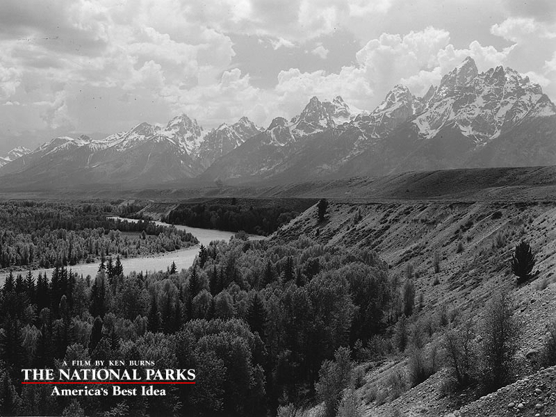

The National Parks: America’S Best Idea - A New Series From Ken Burns And Pbs
Through this stunning new television series you can discover the captivating and unique wonders of our national parks, plus the passionate people who have shaped the history of America’s national parks system - the first of its kind in the world.
By the Mother Earth News editors
September 25, 2009
Where can you find trees that existed before the Egyptians built the first pyramids, rocks that are more than 1.7 billion years old, the world’s greatest collection of geysers and more, all in 84 million acres of breathtaking scenery? Right here, in our national parks - that “treasure house of nature’s superlatives,” which belongs not to rich aristocrats or high-ranking government officials, but to you and every other American citizen.
To honor these national nature treasures and the history of our parks, PBS and renowned filmmaker Ken Burns spent six years creating The National Parks: America’s Best Idea, a six-part series that premiers Sunday, Sept. 27.
The series is packed with interesting history, inspiring personal stories and - it can’t be emphasized enough - awe-inspiring footage of the most beautiful places in the United States. We’ve watched all six episodes and have written short synopses of each to give you a taste of what you’ll see. It’s rough work, we know, but that’s what we’ll do for our readers. In all seriousness, though, this series is stunning; we guarantee it’ll stir your soul. So set your DVR or VCR; schedule some family time to watch it; save those errands for another week - whatever you’ve got to do, don’t miss this.
Part 1: “Our Best Selves”
In the first episode of The National Parks: America’s Best Idea, we witness the birth of our national parks system. A few notable points:
- President Lincoln turns his attention away from the ongoing Civil War to sign into law a bill to protect the Yosemite Valley and Mariposa Grove, entreating them to the protection of the state of California.
- John Muir, the Scottish-born son of a minister, arrives at Yosemite in 1869 to run a lumber mill. He goes on to become one of the greatest wilderness ambassadors of all time.
- Early descriptions of Yellowstone liken the area to Hell, with its steaming, explosive geysers and boiling mud that smells of sulfur. Two park visitors are killed when the war between the U.S. Army and Nez Perce Indian Tribe enters the park’s boundaries.
As of 1890, the United States has successfully set aside four national parks: Yellowstone, Yosemite, General Grant and Sequoia. But there’s no time to celebrate, as a new challenge presents itself - in the struggle to preserve the integrity of our new parks from commercialization, and destruction by poachers, loggers and scavengers.
- Alison Rogers
Part 2: “The Scripture of Our Nature”
Despite valiant efforts from the U.S. Army and park proponents, our newly declared reserves and the wildlife within them were in danger of exploitation by a public who didn’t fully understand their significance, and by often ruthless opportunists who sought to capitalize on these unprotected treasures.
- In the absence of funding from Congress to create an entity to oversee the management of our new parks, tourists run amuck through the landmarks. Visitors walk right up to the edge of a Yellowstone geyser and peer into it!
- The Sierra Club and the Audubon Society are created to combat the parks’ rapidly dwindling wildlife populations, brought on by trophy hunters seeking a paycheck from hat makers and taxidermists. Wildlife conservation is born.
- Theodore Roosevelt makes his grand debut in this installment, fighting for the parks first as author, then later as president. Roosevelt sets aside five national parks, 51 federal bird sanctuaries, four national game refuges, 18 national monuments and more than 100 million acres of national forests for future generations to enjoy.
The second installment of this series ends with the passing of John Muir, a bittersweet close to a program filled with beautiful stories and images of the ruins of Mesa Verde, the Florida Everglades, Mount Rainier, Muir Woods, the Grand Canyon and many more spectacular destinations.
- Alison Rogers
Part 3: “The Empire of Grandeur”
The third episode of the series sees a passionate push to achieve National Park status for more U.S. wilderness areas, ultimately met with great success following years of relentless effort and brilliant strategy on the part of a few dedicated champions, as well as the common citizens of the nation as a whole.
- Taking up the charge in 1914, self-made millionaire Stephen Mather devotes his life and much of his fortune to protecting more land and fulfilling his dream of creating a single agency to manage all of the parks - becoming perhaps the single-most influential player in the preservation and protection of the parks.
- Yellowstone and Yosemite are already established as National Parks, and in the years to come, Mather and his assistant, Horace Albright, usher into the fold many more lands. The area surrounding Mount Rainier, the rock dwellings at Mesa Verde, Wind Cave in South Dakota, Crater Lake, and the Rocky Mountain, Grand Canyon, Hawaii, Acadia, McKinley (later returned to its original Native American name, Denali) and Smoky Mountain National Parks are included.
- Key players, ardent and sometimes tremendously wealthy advocates, bring more attention and funds, including John D. Rockefeller, Jr., brother photographers Ellsworth and Emery Kolb, Charles W. Eliot, George Bucknam Dorr, and more.
- In 1916, a bill creating the National Park Service is signed into law, shifting oversight from the ambiguous authority held by the departments of Agriculture, Interior and War - essentially no one was in control. Mather is appointed the Service’s first director.
- Railroad companies begin furiously laying tracks and fiercely competing to carry curious travelers to the heavily marketed parks, dramatically increasing the number of visitors, though most at this point belong to the upper classes (those with the time and means to make the trip).
- Aubrey Vaughn
Part 4: “Going Home”
The fourth episode witnesses an explosion of traffic to the parks, surpassing 1 million annually, as the availability of the automobile to the masses makes visiting the parks the ultimate democratic and democratizing experience. Plus, the nation begins to look beyond its West coast (and the small northeast corner that is Acadia) to discover and appreciate its natural treasures. The environmental movement continues to grow and evolve, while would-be developers up the ante in their efforts to prevent increased preservation efforts. That’s not all ...
- Rangers become a symbol for the parks as their ranks grow to accommodate the increased traffic. Ranger naturalists are hired to educate visitors, as well. While most Rangers and Ranger Naturalists are men, women are also represented among the ranks.
- Author Horace Kephart and photographer George Masa, née Haneye Matsushita, team up to protect the area that is to become the Great Smoky Mountain National Park. Community leaders, school children and churches contribute funds and efforts to save the park.
- In the early 1920s, a 6,000-mile park-to-park highway loop is created, connecting all of the existing western parks. Artists are hired to oversee the design of bridges and roads to insure both the best views as well as routes that will do the least harm to the parks themselves.
- Aldo Leopold and Robert Sterling Yard join forces with others to create The Wilderness Society to fight what they view as Stephen Mather’s commodification of the park lands.
- Aubrey Vaughn
Part 5: “Great Nature”
In the fifth installment of the series, you’ll witness the evolution of the national parks - from places to enjoy nature as a spectacle, to holistic refuges for all flora and fauna within their borders, to the sanctuaries of American history and character. You’ll also learn how the parks helped sustain the United States through some of its most challenging times.
Here are some of the many landmark developments chronicled in this episode:
- The 1933 transfer of jurisdiction over national memorials and monuments (such as those on the National Mall in Washington D.C.) and historic battlefields (such as Gettysburg and Yorktown) to the National Park Service.
- The idea that preserving the plants and wildlife within the national parks is just as important as preserving the land of the park itself gains significant ground.
- The approval of Everglades National Park, the first national park created primarily for its importance as an ecosystem, rather than the grandeur of its scenery.
- The impact of the Great Depression on the national parks. Or, perhaps better said, the impact of the national parks on the Great Depression. The number of visitors to the parks actually rose during the Depression - these refreshing escapes were needed more than ever. Also, more than 3 million jobs were created through the Civilian Conservation Corps (CCC), an economic boon to families across the country and a labor benefit to the parks themselves in the form of reforestation, road building and land management.
- John Rockhold
Part 6: “The Morning of Creation”
As America emerged from World War II and entered the Baby Boom era, the national parks enjoyed a surge in visitors. In Yellowstone alone, attendance quadrupled in 1946. Two years later, the park would see more than 1 million visitors. Similar enthusiasm was experienced at parks across the United States.
While the national parks’ caretakers worked to accommodate this rapidly rising popularity without having received increases in staffing or budgets since the Great Depression, two even larger issues loomed: the tug of war between conservation and development, and the paradoxical conundrum that occurred as more and more visitors put such pressure on the parks that they were in danger of being loved to death.
Episode six begins with the story of Adolph Murie, the iconoclast biologist who laid the groundwork of Mt. McKinley National Park (later renamed Denali National Park). Already unpopular with the hunting lobby - and even some of his superiors at the park service - for his support for the protection of predators, Murie conducted the first in-depth scientific study of wolves. Rather than proving the status quo idea that wolves hunt elk, caribou and other prey so much so that they diminish opportunities for human hunters, Murie concluded that wolves actually strengthen the herds of their prey by culling out the weak and the sick. Murie’s work dramatically advanced the understanding of the critical role wolves and other predators play in maintaining a healthy ecosystem.
Next, the episode explores how we humans are actually “the most dangerous species” to the national parks. “The people are wearing out the scenery,” park officials said. At the same time, there was new momentum to develop and modernize the parks with more roads and new facilities, plus tap some of their natural energy resources. But in the public’s backlash, we see the beginning of the modern environmental movement, and America again learned more about its capacity to preserve these unique places. “We are the only species, which, when it chooses to do so, will go to great effort to save what it might also destroy,” said writer and wilderness advocate Wallace Stegner.
In the 1960s, more historical sites, memorials and parks within urban areas were added to the registry, and the parks again proved their value also as a reflection of the chapters of our past. Perhaps the pinnacle of this was Aug. 28, 1963, when the Lincoln Memorial was the backdrop for Martin Luther King’s landmark “I Have a Dream” speech. That day, 250,000 people gathered on the steps of the Lincoln Memorial and the National Mall in support of civil rights for black Americans. With Lincoln looming behind Dr. King, a uniformed park ranger at his side and a throng of people in front of him, Americans come to acutely understand that our national parks are about so much more than nature - they represent the extensive and varied character of America itself.
As the overall series closes, the sixth episode comes full circle with the 1995 reintroduction of wolves to Yellowstone. For the first time in 60-some years, the ecosystem of America’s first national park was complete, brought back into balance through our conscientious efforts.
Respected writer Terry Tempest Williams says restoration is likely to be the challenge for the national parks in the 21st century. But our motivation should be much more than to restore what we have altered, it should be to insure a even better future through the parks for those yet to come.
“Not only are our national parks a gift, I think they are a covenant,” Williams says. “They are a covenant with the future, saying this is where we were, this is what we loved, and now it’s in your hands.”
- John Rockhold
The six-part series, The National Parks: America’s Best Idea, begins Sept. 27, and a DVD of the series comes out Oct. 6. You can find out more about the series, read readers’ favorite national park stories and more at the PBS website. PBS has also created an impressive book of the series, including all of the information from the film and more, plus incredible photos. Tune in starting this Sunday and let us know what you think in the comments section below.
|
CRAIG MELLISH/FLORENTINE FILMS Mount Rainier National Park in Washington is just one of the many breathtaking destinations you’ll travel to in the new national parks series from PBS and Ken Burns. You can see more elegant national park photos at www.pbs.org/nationalparks. |
QT LUONG/TERRAGALLERIA.COM Yosemite Valley in winter, Yosemite National Park. See more photos at www.pbs.org/nationalparks. |
 CRAIG MELLISH/FLORENTINE FILMS Rainbow from South Rim, Grand Canyon National Park. See more photos at www.pbs.org/nationalparks. |
|
CRAIG MELLISH/FLORENTINE FILMS Grizzly bear fishing for salmon, Brooks Falls, Katmai National Park. See more photos at www.pbs.org/nationalparks. |
 CRAIG MELLISH/FLORENTINE FILMS Sunset on the Pacific, Olympic National Park. See more photos at www.pbs.org/nationalparks. |
HAYNES FOUNDATION COLLECTION/MONTANA HISTORICAL SOCIETY Tourists at an erupting Old Faithful, Yellowstone National Park, 1884. See more photos at www.pbs.org/nationalparks. |
|
JOHN MUIR PAPERS/UNIVERSITY OF THE PACIFIC LIBRARY John Muir in Yosemite National Park, c. 1902. See more photos at www.pbs.org/nationalparks. |
HARPERS FERRY CENTER/NPS HISTORIC PHOTO COLLECTION Herd of buffalo, Wind Cave National Park. See more photos at www.pbs.org/nationalparks. |
CHANDLER GORDON/THE CAPTAIN’S BOOKSHELF INC., ASHEVILLE, N.C. George Masa photograph of Great Smoky Mountains. See more photos at www.pbs.org/nationalparks. |
|
NATIONAL ARCHIVES & RECORDS ADMINISTRATION/PHOTO BY BOB & IRA SPRING Klapatche Park, Mount Rainier National Park. See more photos at www.pbs.org/nationalparks. |
LIBRARY OF CONGRESS, PRINTS & PHOTOGRAPHS DIVISION Tourist at Glacier Point, Yosemite National Park, c. 1902. See more photos at www.pbs.org/nationalparks. |
 HARPERS FERRY CENTER/NPS HISTORIC PHOTO COLLECTION/PHOTO BY GEORGE GRANT The Snake River at Deadman’s Bar, Grand Teton National Park, June 13, 1941. See more photos at www.pbs.org/nationalparks. |